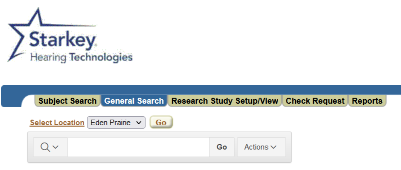
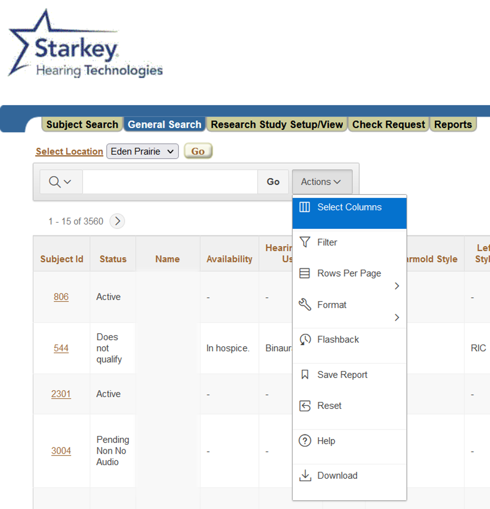
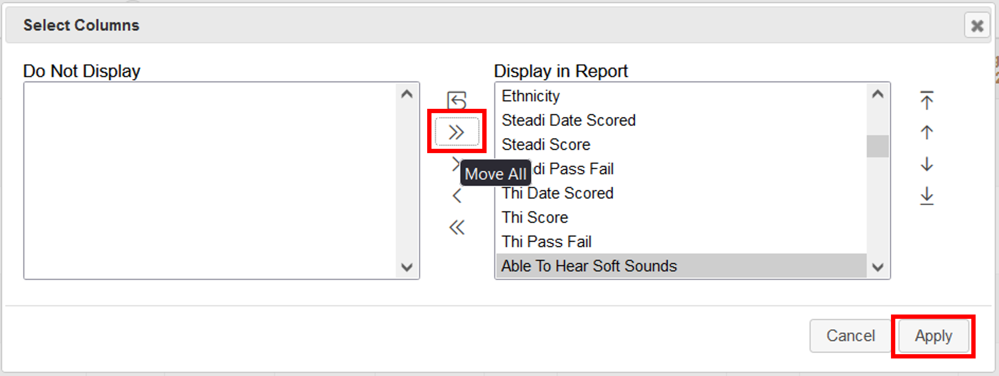
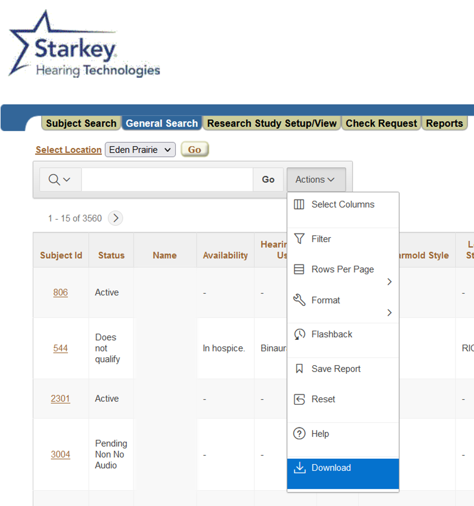
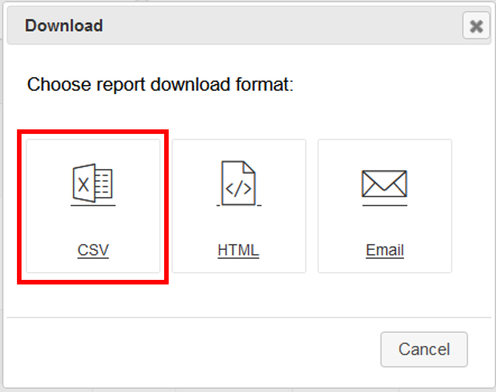

Graphical user interface (GUI) for filtering and browsing subjects from the CAR database.
This GUI was developed to provide an easy method for (1) filtering the CAR database, and (2) browsing the filtered selections.
Filtering: The original database is truncated to fields pertinent to recruiting only, making the database easier to work with. Values are sorted alphanumerically, allowing for easy selection.
Browsing: You can now see the most pertinent subject information all in one organized display, including the full graphical audiogram. Recommended acoustic coupling and vent sizes are provided based on Pro Fit logic.
Log into the CAR database and click the "General Search" tab.

Click the "Actions" button, then choose "Select Columns."

In the window that appears, click the double arrows (pointing right) button to move all the columns into the "Display in Report" list box. Then click "Apply."

Click the "Actions" button again, then choose "Download."

Click the "CSV" button in the window that appears and wait for the file to download.

The Subject Browser can import full downloads from the CAR database, as well as filtered database files exported from the Subject Browser.
The Subject Browser allows you to export filtered .csv database files for further work in Excel and for sharing with others. You can also import the exported files later for browsing and/or further filtering.
The Subject Browser allows you to import a list of saved filter values to avoid entering filter values by hand. This is useful when using the same filter values across recruiting sessions.
The Subject Browser allows you to export a list of your custom filters in .csv format for reuse. This is useful after manually setting several filter values that you might want to use again.
To clear all filter values, navigate to Tools>Reset Filters.
Please use the contact information below to submit bug reports, feature requests and any other feedback. Thank you for using the Subject Browser!